一、Docker概述
(一)、Docker为什么出现？
1、一款产品： 开发–上线 两套环境！应用环境，应用配置！
2、开发 — 运维。 问题：我在我的电脑上可以允许！版本更新，导致服务不可用！对于运维来说考验十分大？
3、环境配置是十分的麻烦，每一个机器都要部署环境(集群Redis、ES、Hadoop…) !费事费力。
4、发布一个项目( jar + (Redis MySQL JDK ES) )，项目能不能带上环境安装打包！
5、之前在服务器配置一个应用的环境 Redis、MySQL、JDK、ES、Hadoop 配置超麻烦了，不能够跨平台。开发环境Windows，最后发布到Linux！
6、传统：开发jar，运维来做！
6、现在：开发打包部署上线，一套流程做完！
7、安卓流程：java — apk —发布（应用商店）—- 张三使用apk一安装即可用！
8、docker流程： java-jar（环境） — 打包项目带上环境（镜像） — ( Docker仓库：商店）——-下载我们发布的镜像 —- 直接运行即可！
8、Docker给以上的问题，提出了解决方案！
9、Docker的思想就来自于集装箱！
10、JRE – 多个应用(端口冲突) – 原来都是交叉的！
11、隔离：Docker核心思想！打包装箱！每个箱子是互相隔离的。
12、Docker通过隔离机制，可以将服务器利用到极致！
13、本质：所有的技术都是因为出现了一些问题，我们需要去解决，才去学习！
(二)、Dcoker的历史
1、2010年，几个搞IT的年轻人，就在美国成立了一家公司 dotcloud
2、做一些 pass 的云计算服务！LXC（Linux Container容器）有关的容器技术！
3、Linux Container容器是一种内核虚拟化技术，可以提供轻量级的虚拟化，以便隔离进程和资源。
4、他们将自己的技术（容器化技术）命名就是 Docker。
4、Docker刚刚延生的时候，没有引起行业的注意！dotCloud，就活不下去！
5、2013年，Docker开源！
6、越来越多的人发现docker的优点！火了。Docker每个月都会更新一个版本！
7、2014年4月9日，Docker1.0发布！
(三)、docker为什么这么火？
1、在容器技术出来之前，我们都是使用虚拟机技术！
2、虚拟机：在window中装一个VMware，通过这个软件我们可以虚拟出来一台或者多台电脑！笨重！
3、虚拟机也属于虚拟化技术，Docker容器技术，也是一种虚拟化技术！
4、vm : linux centos 原生镜像（一个电脑！） 隔离、需要开启多个虚拟机！ 几个G 几分钟
5、docker: 隔离，镜像（最核心的环境 4m + jdk + mysql）十分的小巧，运行镜像就可以了！小巧！ 几个M 秒级启动！
6、Docker基于Go语言开发的！开源项目！
7、docker官网：https://www.docker.com/
8、文档：https://docs.docker.com/ Docker的文档是超级详细的！
9、仓库：https://hub.docker.com/ 相当于 github
(四)、Docker能做什么？
比较Docker和虚拟机技术的不同：
1、传统虚拟机,虚拟出一条硬件，运行一个完整的操作系统，然后在这个系统上安装和运行软件
容器内的应用直接运行在宿主机的内容，容器是没有自己的内核的，也没有虚拟我们的硬件，所以 2、就轻便了,每个容器间是互相隔离，每个容器内都有一个属于自己的文件系统，互不影响
(五)、Docker的基本组成
- 镜像（image)：
docker镜像就好比是一个目标，可以通过这个目标来创建容器服务，tomcat镜像==>run==>容器（提供服务器），通过这个镜像可以创建多个容器（最终服务运行或者项目运行就是在容器中的）。
- 容器(container)：
Docker利用容器技术，独立运行一个或者一组应用，通过镜像来创建的.
启动，停止，删除，基本命令
目前就可以把这个容器理解为就是一个简易的 Linux系统。
- 仓库(repository)：
仓库就是存放镜像的地方！
仓库分为公有仓库和私有仓库。(很类似git)
Docker Hub是国外的。
阿里云…都有容器服务器(配置镜像加速!)
二、安装
(一)、Linux的内核3.10以上

(二)、清除杂的环境
x
1 yum remove docker \2 docker-client \3 docker-client-latest \4 docker-common \5 docker-latest \6 docker-latest-logrotate \7 docker-logrotate \8 docker-engine
(三)、虚拟机联网安装应用
xxxxxxxxxx11yum –y install yum-utils
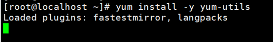
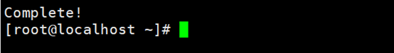
(四)、设置镜像仓库
x
1yum-config-manager \2 --add-repo \3 https://mirrors.aliyun.com/docker-ce/linux/centos/docker-ce.repo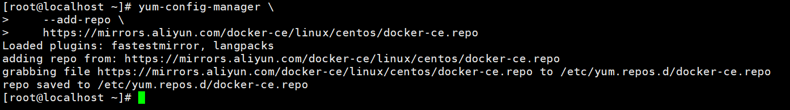
(五)、更新yum包索引
xxxxxxxxxx11yum makecache fast
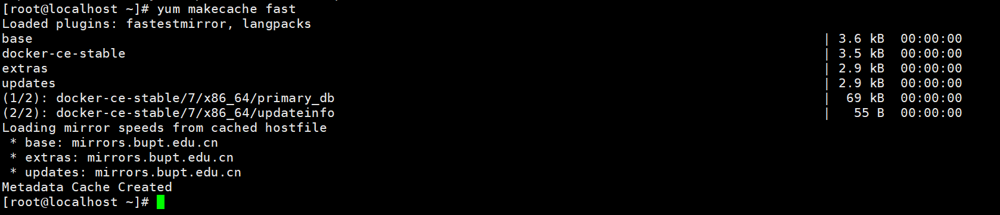
(六)、安装doker-ce(社区办) dockerEE是企业版
xxxxxxxxxx11yum -y install docker-ce docker-ce-cli containerd.io
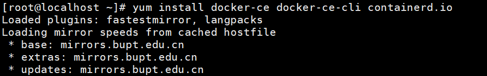
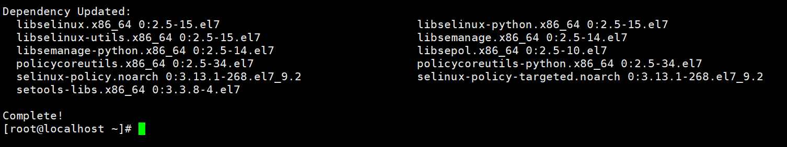
(七)、启动docker
xxxxxxxxxx11systemctl start docker
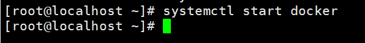
(八)、查看docker版本
xxxxxxxxxx11docker verson
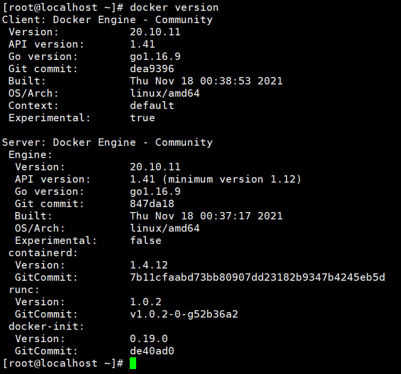
(八)、测试
xxxxxxxxxx11docker run hello-world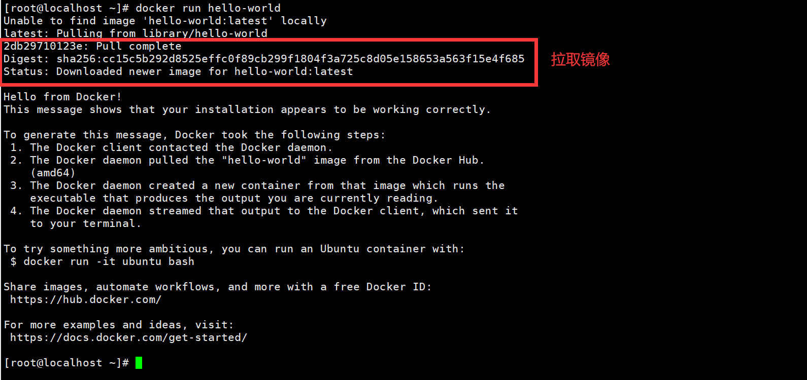
(九)、查看镜像
xxxxxxxxxx11docker images
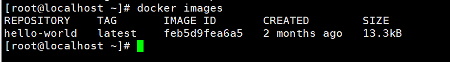
二、卸载Docker
xxxxxxxxxx31yum remove docker-ce docker-ce-cli containerd.io2rm -rf /var/lib/docker3rm -rf /var/lib/containerd
三、常用命令
(一)、帮助命令
xxxxxxxxxx31docker verson # 显示docker的版本信息2docker info # 显示docker的系统信息,包括镜像和容器数量3docker 命令 –help # 帮助命令(二)、镜像命令
1、查看本机所有镜像
xxxxxxxxxx11docker images
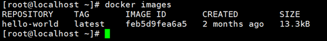
1.1、解释:
xxxxxxxxxx51REPOSITORY # 镜像的仓库源2TAG # 镜像的标签3image ID # 镜像的ID4CREATED # 镜像的创建时间5SIZE # 镜像的大小1.2、可选项
xxxxxxxxxx21-q, --all # 列出所有的镜像2-q,--quiet # 只显示镜像的id2、搜索镜像
xxxxxxxxxx11docker search # 搜索的镜像名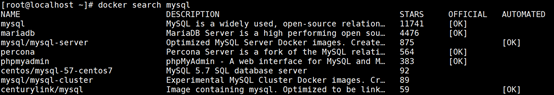
2.1、可选项
x1--filter=选项名=什么 2
3例:--filter=stars=3000 # 搜索出来镜像大于3000的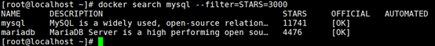
3、下载镜像
3.1、最新版下载
xxxxxxxxxx11docker pull 镜像名(默认最新版)
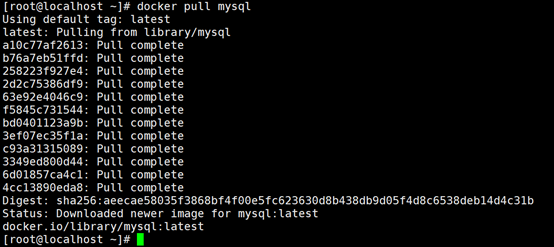
3.2、指定版本下载
xxxxxxxxxx11docker pull mysql:5.7
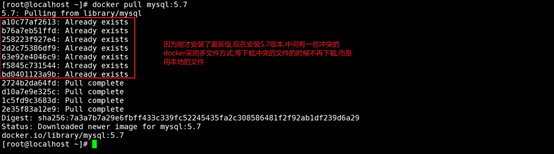
4、删除镜像
4.1、删除单个镜像
xxxxxxxxxx11docker rmi –f 镜像id
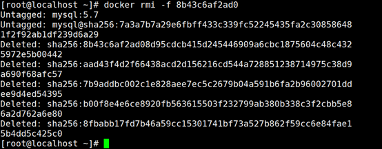
4.2、删除多个镜像
xxxxxxxxxx11docker rmi -f 镜像id 镜像id 镜像id 镜像id
4.3、删除全部镜像
xxxxxxxxxx11docker rmi -f $(docker images -aq)
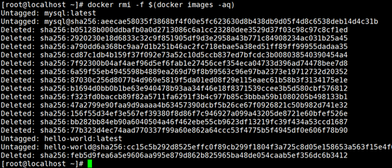
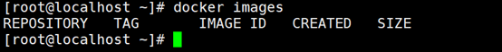
(三)、容器操作
1、下载镜像(有镜像才能生成容器)
docker pull centos
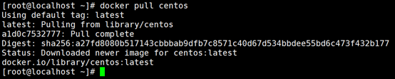
2、容器命令总结
xxxxxxxxxx81docker run 镜像id 新建容器并启动2docker ps # 列出所有运行的容器 3docker container list4docker rm 容器id # 删除指定容器5docker start 容器id # 启动容器6docker restart 容器id # 重启容器7docker stop 容器id # 停止当前正在运行的容器8docker kill 容器id # 强制停止当前容器3、新建容器并启动
xxxxxxxxxx11docker run [参数] image参数:
xxxxxxxxxx81--name=”new Name” # 给容器起一个名字2--d # 后台方式运行3--it # 交互方式运行4--p # 制定容器端口5-p ip:主机端口:容器端口 # 容器端口和主机端口映射6-p 主机端口:容器端口7-p 容器端口8--P # 随机制定端口xxxxxxxxxx11docker run –it centos /bin/bash
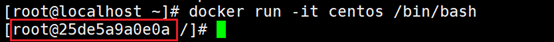
4、容器返回主机
xxxxxxxxxx11exit # 结束容器运行并返回主机
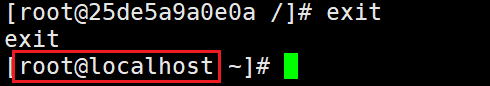
xxxxxxxxxx11ctrl+p+q # 退出不停止容器
6、查看容器
6.1查看正在运行的容器
xxxxxxxxxx11docker ps
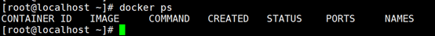
6.2、查看运行过的容器
xxxxxxxxxx11docker ps -a
7、启动&停止&强制停止
7.1、启动容器
xxxxxxxxxx11docker start 容器id
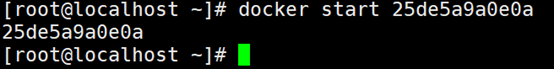
7.2、停止容器
xxxxxxxxxx11docker stop 容器id
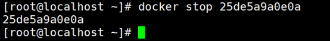
7.3、强制停止
xxxxxxxxxx11docker kill 容器id
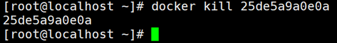
5、删除容器
5.1、删除指定容器,不能删除运行中的容器
xxxxxxxxxx11docker rm 容器id
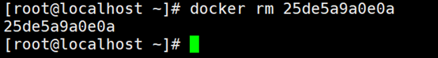
5.2、删除所有容器
xxxxxxxxxx11docker rm -f $(docker ps -aq)
或
xxxxxxxxxx11docker ps -a -qlxargs docker rm
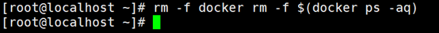
(四)、其他命令
1、用后台方式启动容器
xxxxxxxxxx21docker run -d centos2docker 容器使用后台运行，就必须要有一个前台进程， docker 发现没有应用，就会自动停止
2、查看日志
2.1、首先使用后台启动启动一个容器
xxxxxxxxxx11docker run -d centos /bin/sh -c "while true;do echo 6666;sleep 1;done"
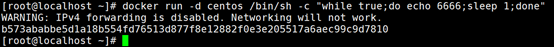
2.2、查看容器日志信息
xxxxxxxxxx11docker logs -tf --tail 查看多少条 容器id
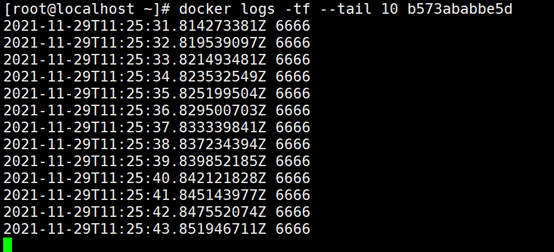
3、查看容器中进程的信息
xxxxxxxxxx11docker top 容器id
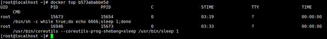
4、查看镜像元数据
xxxxxxxxxx11docker inspect 容器id
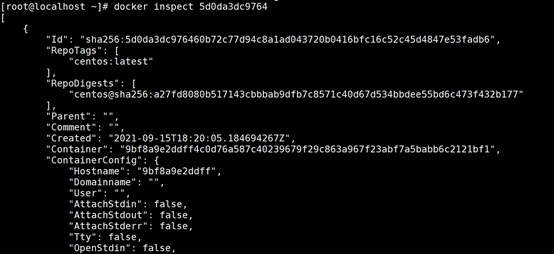
5、进入后台容器(方式一)
xxxxxxxxxx11docker exec -it 容器id /bin/bash
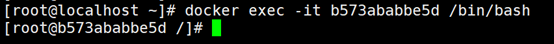
6、进入后台容器(方式二)
xxxxxxxxxx11docker attach 容器id
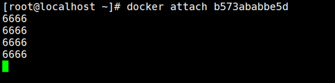
7、2种进入后台命令的区别
xxxxxxxxxx21exec # 开启一个新的终端,可以在里面操作exit不终止容器2attach # 进入容器正在执行的终端,exit退出终止容器8、从容器中拷贝到主机
8.1、进入容器并创建文件
xxxxxxxxxx11docker run –it –name=”cpTest” centos /bin/bash
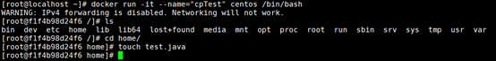
8.2、退出容器不要终止
xxxxxxxxxx11ctrl+p+q
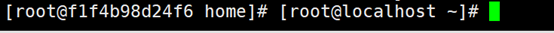
8.3、开始复制
xxxxxxxxxx11docker cp 容器id:容器文件位置 复制到本地的目录
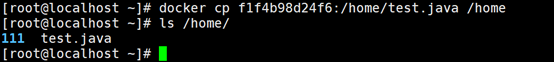
四、安装服务
(一)、安装nginx
1、搜索镜像
xxxxxxxxxx11docker search nginx
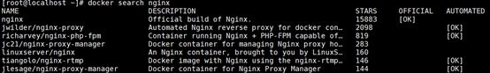
2、拉取镜像
xxxxxxxxxx11docker pull nginx
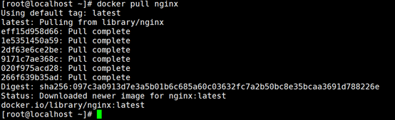
3、创建容器
xxxxxxxxxx21docker run –it 名字 映射本地端口为3344容器中端口为80 使用nginx镜像2docker run –it –name=”one nginx test” –p 3344:80 nginx
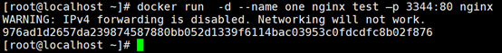
4、测试
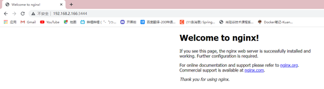
(二)、安装tomcat
1、搜索镜像
xxxxxxxxxx11docker search tomcat
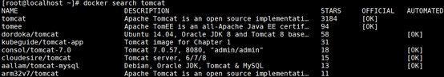
2、安装tomcat
xxxxxxxxxx11docker pull tomcat:9.0
3、创建tomcat容器
xxxxxxxxxx11docker run -d --name onTomcat -p3999:80 tomcat
4、进入容器
xxxxxxxxxx11docker exec -it onTomcat /bin/bash
5、复制tomcat模板到主目录
xxxxxxxxxx11cp webapps.dist/* webapps
6、访问
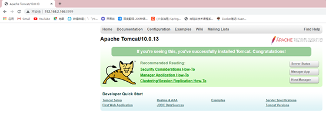
(三)、Docker可视化
1、安装
xxxxxxxxxx21docker run -d -p 8080:9000 \2--restart=always -v /var/run/docker.sock:/var/run/docker.sock --privileged=true portainer/portainer
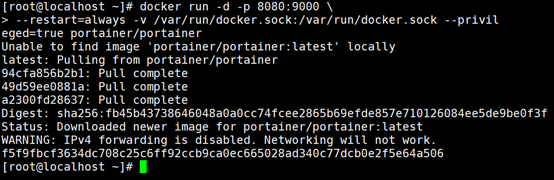
2、测试
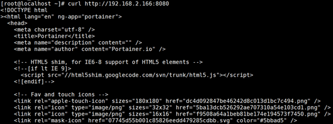
五、打包镜像
(一)、命令
xxxxxxxxxx21docker commit 提交容器为一个镜像2docker commit –m=”描述信息” –a=”作者” 容器id 目标镜像名:版本
(二)、打包镜像说明
xxxxxxxxxx11一开始的tomcat的webapp下没有东西,webapp的东西在webapp.dict中,我们创建一个官方的tomcat容器,进去把webapp.dict的内容复制一份到webapp中,并打包成为自己的tomcat
(三)、开始打包
1、使用tomcat进入容器
xxxxxxxxxx11docker run -it --name oneTomcat -p 3666:8080 tomcat /bin/bash
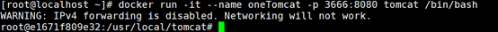
2、复制webapp.dict的文件到webapp中
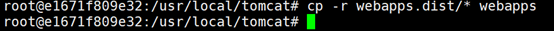
3、退出但不终止容器
xxxxxxxxxx11ctrl+p+q
4、打包镜像
xxxxxxxxxx11docker commit -m="my one image" -a="ma" e1671f809e32 onetomcatimage:1.0
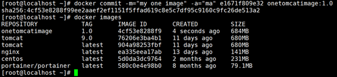
六、容器数据卷
(一)、什么是容器卷
当我们使用容器的时候在容器中创建文件,如果不小心删除了容器就没有了,这时候就需要存储到本地,这就用到了容器卷,使容器中的文件和本地文件相对应
即使容器停止或删除,本地文件还是有的
(二)、使用数据卷命令
xxxxxxxxxx11docker run -it -v 主机目录:容器内目录
(三)、使用Centos容器做例子
1、使Centos容器中的/home目录和本地的/home/ceshi绑定
xxxxxxxxxx11docker run -it -v /home/ceshi:/home centos /bin/bash
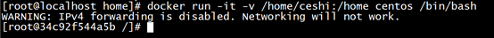
2、在Centos的/home中创建文件
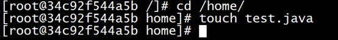
3、退出查看本地的/home/ceshi文件
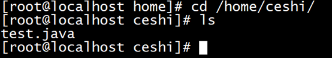
(四)、使用Mysql做例子
1、下载mysql&开启容器&文件绑定
xxxxxxxxxx11docker run -it -p 3344:3306 -v /home/mysql/conf:/etc/mysql/my.conf -v /home/mysql/data:/var/lib/mysql -e MYSQL
2、查看容器中/var/lib/mysql并查看目录
3、创建文件

4、退出容器查看本地文件
(五)、具名和匿名挂载
1、匿名挂载
xxxxxxxxxx11docker run -d -P --name nginx01 -v /etc/nginx nginx
2、查看匿名挂载
3、具名挂载
xxxxxxxxxx11docker run -d -P --name nginx02 -v juming-nginx:/etc/nginx nginx
4、查看具名挂载
5、说明
匿名挂载:volume没有名字,会生成一个uuid作为卷的名字
具名挂载:volume规定了名字,但没有指定本机的目录,默认是在/var/lib/docker/volume下
6、分类
xxxxxxxxxx31-v 容器内路径 # 匿名挂载2-v 名字:容器内路径 # 具名挂载3-v 本地路径:容器内路径 # 指定路径挂载(六)、卷权限设置
xxxxxxxxxx41ro readonly # 只读2rw readwrite # 可读可写3docker run –d –P –name nginx01 –v name:/etc/nginx:ro nginx4docker run –d –P –name nginx01 –v name:/etc/nginx:rw nginxro权限:
当卷设置了ro权限,只能通过本地主机修改文件,容器内对文件无法操作
(七)、数据卷容器(容器数据同步)
1、首先创建一个用来同步卷的容器
xxxxxxxxxx11docker run -it --name centos01 centos -v /volume1 /bin/bash
2、退出不终止
3、创建另一个容器实现同步机制
使用参数 --volumes-from 同步卷的容器
4、进入volume1文件夹创建文件
5、退出不终止,进入centos1
七、DockerFile(创建自己的镜像)
(一)、介绍
dockerFile是用来构建docker镜像的的文件,命令参数脚本!
(二)、构建步骤
1、编写一个dockerfile文件
2、docker build构建一个镜像
3、docker run运行一个镜像
4、docker push发布镜像(dockerhub或阿里云仓库)
(三)、dockerfile的规则
1、每个关键字必须 大写
2、执行从上到下
3、#表示注释
(四)、dockerfile常用命令
xxxxxxxxxx121FROM # 基础镜像，一切从这里开始构建2MAINTAINER # 镜像是谁写的， 姓名+邮箱3RUN # 镜像构建的时候需要运行的命令4ADD # 步骤，tomcat镜像，这个tomcat压缩包！添加内容 添加同目录5WORKDIR # 镜像的工作目录6VOLUME # 挂载的目录7EXPOSE # 保留端口配置8CMD # 指定这个容器启动的时候要运行的命令，只有最后一个会生效，可被替代。9ENTRYPOINT # 指定这个容器启动的时候要运行的命令，可以追加命令10ONBUILD # 当构建一个被继承 DockerFile 这个时候就会运行ONBUILD的指令，触发指令。11COPY # 类似ADD，将我们文件拷贝到镜像中12ENV # 构建的时候设置环境变量！(五)、创建自己的dockerfile
1、在/home下创建一个dockerfile文件夹储存dockerfile文件
2、编写dockerfile文件
xxxxxxxxxx91FROM centos # 使用centos作为基础环境2MAINTAINER ma<2992455524@qq.com> # 作者<邮箱>3ENV MYPATH /usr/local # 环境变量4WORKDIR $MYPATH # 刚进去的工作目录为/usr/local5RUN yum -y install vim # 中间执行的命令6RUN yum -y install bind # 下载dns服务7EXPOSE 80 # 暴露端口为80端口8CMD echo $MYPATH # 输出$MYPATH环境变量9CMD /bin/bash # 以bash的方式运行3、构建这个镜像
xxxxxxxxxx21docker build –f dockerfile文件名 –t 镜像名:版本号2docker build-f dockerfile1 –t mycentos:1.0 . (不要忘了后面还有一个.)
4、使用镜像
xxxxxxxxxx11docker run –it mycentos:1.0 /bin/bash
(六)、制作tomcat镜像
1、准备jdk和tomcat压缩包
2、编写dockerfile文件
xxxxxxxxxx111FROM centos2MAINTAINER ma<2992455524@qq.com>3ADD java-11-openjdk-11.0.11.9-1.windows.redhat.x86_64.zip /usr/local/4ADD apache-tomcat-8.0.50-windows-x64.zip /usr/local/5ENV MYPATH /usr/local6WORKDIR $MYPATH7ENV JAVA_HOME /usr/local/java-11-openjdk-11.0.11.9-1.windows.redhat.x86_648ENV CATALINA_HOME /usr/local/apache-tomcat-8.0.50-windows-x649ENV PATH $PATH:$JAVA_HOME/bin:$CATALINA_HOME/lib10EXPOSE 808011CMD /usr/local/apache-tomcat-8.0.50-windows-x64/bin/startup.sh && /usr/local/apache-tomcat-8.0.50-windows-x64/logs/catalina.out